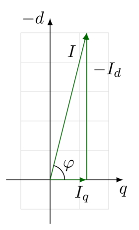
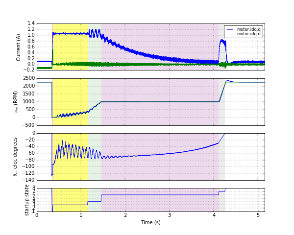
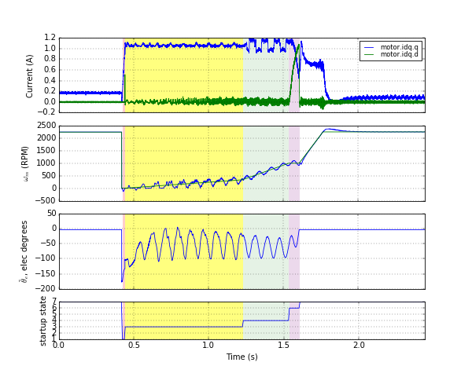

5.2. 启动¶
5.2.1. 概述¶
MCAF 包含两种不同的启动方法。这两种方法均兼容具有最低运行速度的无传感器估计器。每种方法都在闭环电流控制下以强制换相角度运行，将电机从停止状态带到可切换至闭环换相的过渡速度。两种方法之间的唯一区别在于它们如何处理这一过渡。
5.2.1.1. 方法1：经典方法（电流衰减）¶
经典方法最初在 MCAF R1 中引入，在 MCAF R4 之前一直是唯一可用的方法。该方法通过减小指令电流来进行过渡，直到无传感器估计器的角度估计接近强制换相角度，或直到电流降至某一阈值以下。其原理是允许真实的 d 轴电流减小；详见相量分析。
5.2.1.2. 方法2：风向标（参考坐标系对齐）¶
“风向标”方法在 MCAF R4 中引入。该方法通过同时旋转电流矢量和参考坐标系角度来进行过渡，直到无传感器估计器的角度估计接近强制换相角度。
5.2.1.3. 方法3：ZS/MT + 初始位置校正¶
如果 零速/最大转矩（ZS/MT） 被用作主估计器，则需要专门的启动算法。
5.2.1.4. 启动方法的选择¶
启动方法可在 motorBench 的 Customize（自定义）页面® Development Suite（开发套件）中选择。风向标方法提供更快的启动速度，且对扰动转矩的鲁棒性优于经典方法，但在过渡期间可能产生较大的转矩瞬变。
当 ZS/MT 作为主估计器时，需要使用 ZS/MT + IPC。
5.2.2. 启动序列和公共要素¶
经典方法和风向标方法都经过以下启动状态序列，并要求电机在开始启动时处于静止状态。在启动序列的大部分时间里，速度控制被禁用，使用 FOC 的闭环电流控制被启用，但采用强制换相角度。
启动状态 |
电流 |
换相 |
说明 |
|---|---|---|---|
电流上升（ |
从零线性增加至 |
固定， |
|
对齐（ |
固定， |
固定， |
QEI 反电动势同步 可使启动保持在此状态，并可修改电流或换相角度。 |
慢加速（ |
固定， |
恒定加速度的二次（线性速度斜坡） |
允许有源阻尼。齿槽转矩可能是主要的机械负载。当达到 |
快加速（ |
固定， |
恒定加速度的二次（线性速度斜坡） |
允许有源阻尼。齿槽转矩可能是主要的机械负载。当达到 |
稳速（ |
固定， |
恒速线性 |
允许有源阻尼。可在此状态保持 QEI 反电动势同步 |
电流下降（ |
指数衰减 |
恒速线性 |
当角度偏差降至阈值以下或电流降至阈值以下时进入下一状态。 |
过渡（ |
速度控制器输出 |
估计器输出加小偏移 |
速度控制器启用。换相角度来自估计器。偏移角度的选择用于实现从前一状态的平滑过渡。当偏移角度降至零时启动完成。 |
参考坐标系对齐（ |
固定， |
恒速线性 |
电流矢量向 d 轴旋转以反映其实际值。当角度偏差降至阈值以下时启动完成。 |
该序列也可参见 图 5.50：

图 5.50 启动序列中电流和电气频率的曲线图。（所示为风向标启动算法。）¶
MCAF R4 和 R5 增加了在 motorBench 的 Customize（自定义）页面中调整各种启动参数的功能® Development Suite（开发套件）。参见 参数自定义 了解更多信息。
5.2.2.1. 启动状态码¶
为便于可能不共享完全相同状态序列的不同启动算法，已创建了一组通用的状态码。状态码可通过 MCAF_StartupGetStatus() 读取，其值将为以下之一：
MSST_ALIGN—处于“对齐”阶段，电机被保持在恒定或缓慢变化的电气角度。状态机可被其他算法保持在此状态，例如 反电动势同步。MSST_ACCEL—处于“加速”阶段，电机正在加速。MSST_SPIN—处于“稳速”阶段，电气角度以恒定频率更新。状态机可被其他算法保持在此状态。MSST_COMPLETE—启动完成。MSST_UNSPECIFIED—启动处于上述以外的其他状态。
5.2.2.2. 相量分析¶
图 5.51 展示了开环换相期间典型的电流矢量。电流的幅值 \(I\) 被选择为显著高于所需的产生转矩的电流 \(I_q\)，以使转子被拖动并保持同步。（在此行为下，PMSM 的运行大致类似于微步进运行时的步进电机。）因此，大部分电流矢量沿 d 轴方向。在 MCAF 中，在启动的大部分时间里，电流沿开环参考坐标系的 q 轴施加，没有 d 轴分量，因此开环参考坐标系的 q 轴与电流矢量对齐。这意味着 \(\varphi\) 实际 q 轴与软件中 q 轴之间的角度差，在电机机械转矩负载相对较低时通常在 60–90° 范围内。
两种方法以不同方式实现向闭环运行的相对平滑过渡：
在经典方法中，电流幅值减小。这将减小 d 轴电流，而 \(I_q\) 将大致保持为抵消任何机械转矩负载所需的值。
在风向标方法中，电流矢量被旋转，使开环参考坐标系与实际转子参考坐标系收敛，大部分施加的电流沿 d 轴方向，小部分沿 q 轴方向。

图 5.51 强制换相期间的电流矢量 —大部分电流沿 d 轴方向。¶
为更清楚地说明这一点，使用 Hurst DMB0224C10002（Microchip #AC300020）加惯性负载进行实验。在两种方法的启动过程中记录了选定的程序变量，以 AN1292 PLL 作为估计器。
5.2.3. 经典启动（电流衰减）¶
在经典方法中，电流减小，如 图 5.52所示。这使强制换相角度向从估计器得到的角度收敛，尽管有时该过程较慢且需要非常小的电流。

图 5.52 经典启动¶
不同的启动状态以不同颜色标出：
电流上升（1）：红色
慢加速（3）：黄色
快加速（4）：绿色
电流下降（6）：紫色
过渡（7）：灰色
（注意，在此示例中跳过了对齐（2）和稳速（5）状态；这些状态允许 QEI 反电动势同步 发生，但如果没有正交编码器或同步已经发生，则启动序列立即进入下一状态。）
5.2.4. 风向标启动¶
在风向标方法中，电流矢量被旋转，如 图 5.53。
该方法的状态与经典方法相同，不同之处在于参考坐标系对齐（状态6，以紫色标出）取代了电流下降，且启动结束时没有过渡状态。
参考坐标系对齐可比电流下降快得多，且似乎不受电机机械负载的影响。

图 5.53 风向标启动¶
5.2.5. ZS/MT + IPC 启动¶
零速/最大转矩（ZS/MT） 运行需要不同的启动技术。这作为 ZS/MT 详细信息。
5.2.6. 有源阻尼¶
当 PMSM 以恒定电流在强制换相角度下以恒定频率驱动时，其动态特性大致为一个阻尼非常小的二阶系。存在一个虚拟“弹簧”，其恢复转矩由转子磁场与施加的定子磁场之间的任何失配引起。该恢复转矩与转子惯性共同作用产生振荡。当电机以加速频率驱动时，或当电流控制器的误差导致足够的相位滞后时，这些振荡可能增大。
为帮助在强制换相期间控制此效应，MCAF 包含“有源阻尼”功能。该功能在强制换相期间调制电流，通过施加与换相频率和估计器得到的速度之间的差值成正比的电流变化来实现。有源阻尼仅在速度高于阈值时启用，因为对于许多无传感器估计器而言，在低速时无法获得准确的估计值。（启用有源阻尼的速度阈值可在 motorBench 的 Customize（自定义）页面® Development Suite（开发套件）中调整。）这可在 图 5.52 和 图 5.53 中的快加速状态（以绿色标出）期间看到。
5.2.7. 慢加速和快加速¶
启动期间的加速度在速度达到一定阈值后会增加。在低速时，加速度较低，以避免齿槽转矩可能导致的失步。在较高速度时，齿槽转矩以较高的频率出现，该转矩纹波对转子动态的影响较小，因此失步的可能性降低，可以更快地增加速度。（大部分齿槽转矩纹波被转子和负载惯性吸收。）